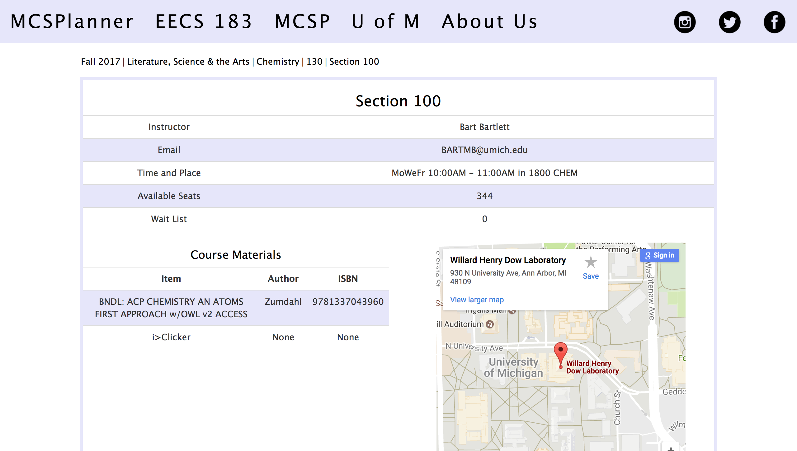
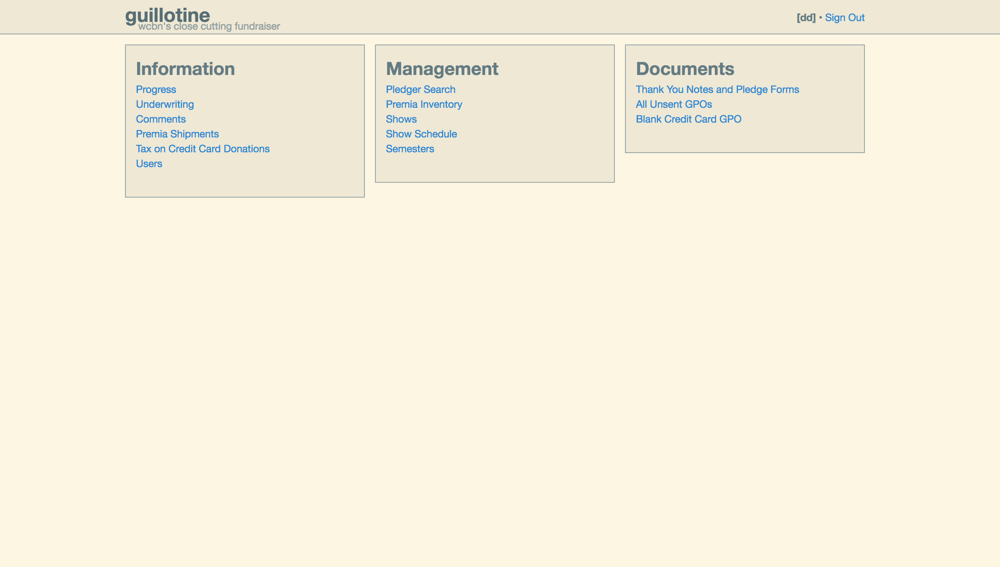

MCSPlanner

MCSPlanner is a course guide for students at the University of Michigan written using a Flask application and the University's course guide API. Students can browse through semesters, colleges, courses, and individual sections to view the professors, seat availablity, and required textbooks. A dynamic Google Map of where each class meets is also generated.
Guillotine

This is a database front-end for managing donations to WCBN-FM during the annual fundraiser pledge drive.
VA.gov

I recently worked as a Web Accessibility Intern with the U.S. Department of Veteran Affairs for VA.gov. Their mission is to make all content and resources available to veterans with audio/visual impairements and other disabilities by meeting the Section 508 standards.